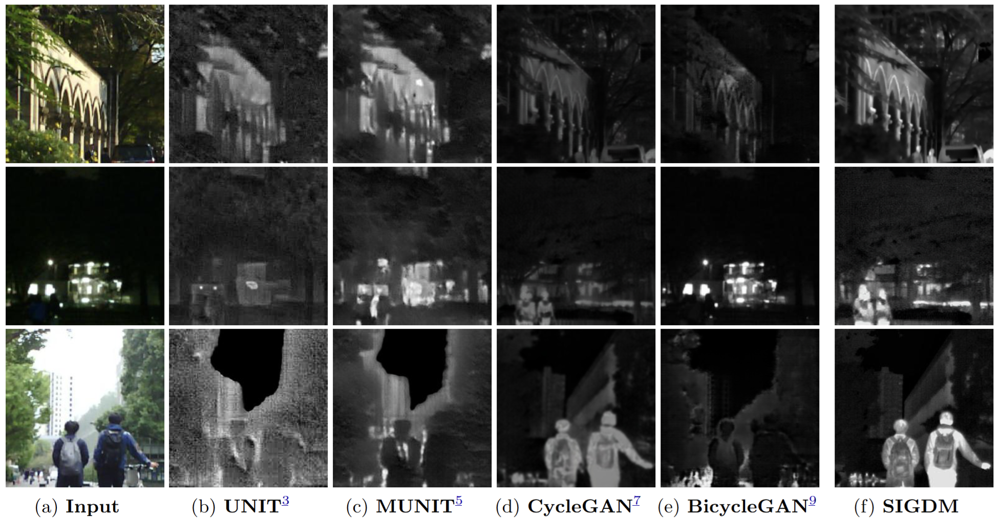

About Me
I am currently an undergraduate student at the NUDT, majoring in Information Engineering in the Qian Class. I graduated from the High School Affiliated to Nanjing Normal University. My research focuses on the intersection of machine learning and remote sensing image processing, particularly in developing generative models for cross-modal AIGC tasks. Beyond research, I enjoy film studies, swimming, and exploring classical & contemporary cinema aesthetics.
Research Interests
- Generative Models for Image Translation: Developing and applying generative models (e.g., Diffusion, GANs) for high-fidelity, cross-domain image translation (e.g., Optical-to-ISAR).
- Semantic-Aware Remote Sensing: Utilizing semantic information (like segmentation) to guide and improve the alignment and translation between different sensor modalities in remote sensing.
News
[Apr 2025] Our paper SAIG: Semantic‑Aware ISAR Generation via Component‑Level Semantic Segmentation was accepted by IEEE Geoscience and Remote Sensing Letters (GRSL).
[Jun 2024] Our paper Optical‑infrared image translation based on diffusion models was published in Proceedings of SPIE (Conference on Spectral Technology and Applications, CSTA 2024).
Publications

This letter proposes SAIG, a semantic-aware framework for generating high-fidelity inverse synthetic aperture radar (ISAR) images from optical images. SAIG achieves this by learning mutual semantic segmentation maps and incorporating component-level refinement to preserve scattering characteristics.

This paper proposes a diffusion-based method (SIGDM) to translate optical images into infrared images, addressing the high cost and limitations of traditional cross-domain registration. The method uses VQ-VAE for latent space formation and a stochastic Brownian Bridge diffusion process for modal alignment.
Hobbies
I love research and cinema. Outside the lab, I swim, roller‑skate, and play piano/ocarina. I also keep notes on films and film theory.
Film Notes
图片来源：豆瓣电影（https://www.douban.com/）

一代宗师
以武学身法折射传统的“后脚跟”，在光影里讨论现代性与根性。

情书
镜像自我的回声室，记忆把缺席的人塑成了爱的投影。

一一
我们始终只能看见生活的一半，另一半隐藏在沉默与日常里。

悲情城市
时代的噪音吞没个人命运，静观镜头让历史的疼痛慢慢显形。

浮云
作为历史的战争似已远去，曾经的珍惜亦不复返。

蓝白红三部曲之蓝
失去后的自由像一池冷水，情感在克制里回温成新的自我。

游园惊梦
欲与梦互为镜像，越追索越看见情感的空无与执念。

飞向太空
记忆以人的模样返回，科幻折叠成一场关于失而得的伦理试验。

三峡好人
巨变背景里的人间小事，拆迁声里漂浮着最轻也最重的情感。

春江水暖
河道的潮汐像家族的呼吸，静水深流里藏着代际的疼与爱。

魔女宅急便
成长是学会把平凡做到可靠，飞行不过是找到自己的风。

星际穿越
时间在亲情面前弯曲，宇宙尺度的宏大最终指向一间房的灯光。

雾中风景
寻父的奥德赛，现实与幻想的边界消融于诗意的迷雾。

大鱼
父亲的奇幻，瑰丽想象的现实，不朽的故事。

大象席地而坐
四小时的灰暗凝视，个体困境碾压成时代注脚，虚无的彼岸。

与玛格丽特的午后
关于阅读的忘年之交，文字成为跨越偏见的桥梁，照亮灵魂。

沙丘2
宏大的视听史诗，信仰被权力异化为战争机器。

攻壳机动队
赛博朋克，冰冷义体与数据洪流，何以为人的灵魂归宿。

吴清源
黑白棋局映照百年孤独，克制与留白中，求道者的中和。
Contact
Email: yuxin_zhao04@163.com